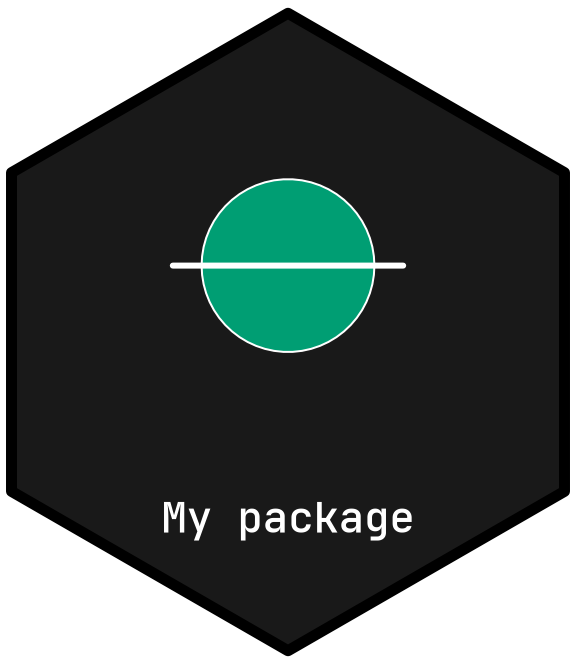
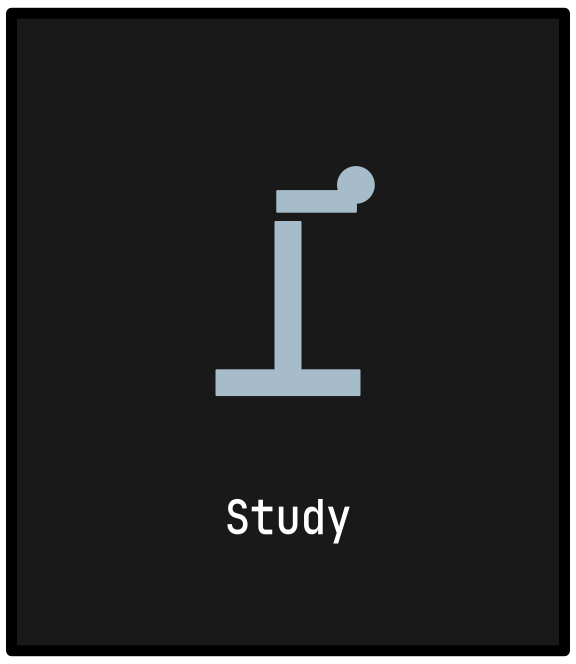

Installation
Install the development package from GitHub:
# install.packages("pak")
pak::pak("CTTIR/hexmakR")Start with a fresh logo
library(hexmakR)
design <- logo_design("My package")This creates a hexagonal frame and name with no archived scientific
motif. The name sits inside the lower part of the frame. A pentagon or
square is available with shape = "pentagon" or
shape = "square".
Add your own artwork as individually editable parts:
design <- hex_add_part(design, "circle", x = .5, y = .6, r = .15)
design <- hex_add_part(design, "line",
x = c(.3, .7), y = c(.6, .6), col = "white", lwd = 3)
hex_layers(design)
#> id type fill col points role name visible
#> 1 layer_0001 polygon #191919 #000000 6 frame Frame TRUE
#> 2 layer_0002 pathgrob #FFFFFF <NA> 1265 name Name TRUE
#> 3 part_0001 circle #009E73 #FFFFFF 1 added Circle TRUE
#> 4 part_0002 lines #009E73 white 2 added Line TRUE
print(design)
Parts have stable IDs such as part_0001. The native
frame and name have layer_ IDs. Obtain the current IDs from
hex_layers() before editing.
design <- hex_edit_layer(design, "part_0001", fill = "#45B59A", dx = .04)
design <- hex_duplicate_part(design, "part_0001")
design <- hex_edit_layer(design, "part_0003", dx = -.2, scale = .7)Use an icon or archive artwork
All 46 generic icons remain available:
logo_design("Study", shape = "square", icon = "microscope")
Archive reuse is optional. Add selected artwork to the design you are making:
head(hex_catalog())
#> name repo family symbol kind
#> 1 molpathR molpathR clinical molpathR R package
#> 2 pressR pressR clinical pressR R package
#> 3 scimagR scimagR clinical scimagR R package
#> 4 zhncommandR zhncommandR clinical zhncommandR R package
#> 5 brainwritR brainwritR evidence brainwritR R package
#> 6 delphyr delphyR evidence delphyr R package
#> source
#> 1 https://github.com/CTTIR/molpathR/blob/main/DESCRIPTION
#> 2 https://github.com/CTTIR/pressR/blob/main/DESCRIPTION
#> 3 https://github.com/CTTIR/scimagR/blob/main/DESCRIPTION
#> 4 https://github.com/CTTIR/zhncommandR/blob/main/DESCRIPTION
#> 5 https://github.com/CTTIR/brainwritR/blob/main/DESCRIPTION
#> 6 https://github.com/CTTIR/delphyR/blob/main/packages/delphyr/DESCRIPTION
#> asset_dir
#> 1 molpathR
#> 2 pressR
#> 3 scimagR
#> 4 zhncommandR
#> 5 brainwritR
#> 6 delphyr
design <- hex_reuse_part(design, "phenoscapR")This imports the source motif’s editable parts while retaining your
name, frame, palette and existing parts. An explicit
hex_design("phenoscapR") instead starts from that whole
archived design. A call to hex_design() without a package
also starts fresh; logo_design("My package") is the direct
way to set your own project name.
Save and continue later
Use hex_import_art(design, "figure.png") to add an
embedded PNG/JPEG image, or supply an SVG file for separately editable
vector shapes. Supported SVG curves become vector polylines. The editor
provides the same feature under Add an image or vector
drawing. Uploads are capped at 10 MiB; outline text and flatten
gradients, masks or intersecting clips first. See
?hex_import_art for the supported SVG subset. Item labels
and groups can be organised with hex_label_layer() and
hex_group_layers().
hex_save_design(design, "my-package.json")
restored <- hex_read_design("my-package.json")
hex_export(restored, "my-package.svg")
hex_export(restored, "my-package.png", width = 1600)
hex_export(restored, "my-package.pdf")
hex_recipe(restored, "reproduce.R")PNG has a transparent exterior. SVG and PDF contain native vector artwork and outlined name glyphs, so they do not depend on locally installed fonts. JSON stores validated settings and parts; opening a project does not evaluate R code. A project must fit within the same 20 MiB limit when saved and reopened.
Open the manual editor
The Designer opens a new logo. Add parts, select one, and use Apply part edit after changing its colours, position, size, opacity or points. Click a part to select it and drag it to move it. Rename items, organise groups and switch the mouse target to move a whole group together. The CTTIR Gallery tab is secondary; browsing it leaves the current logo unchanged.
The original generic sticker interface remains available through
hexmakr_app(workspace = "classic"). Its
hex_sticker() function returns a ggplot object and supports
28 themes, led by the nine CTTIR v5 families, font choices including the
bundled JetBrains Mono, and uploaded images.
See vignette("cttir-library") for archive reuse and
editable projects, and vignette("shiny-app") for the manual
workflow.